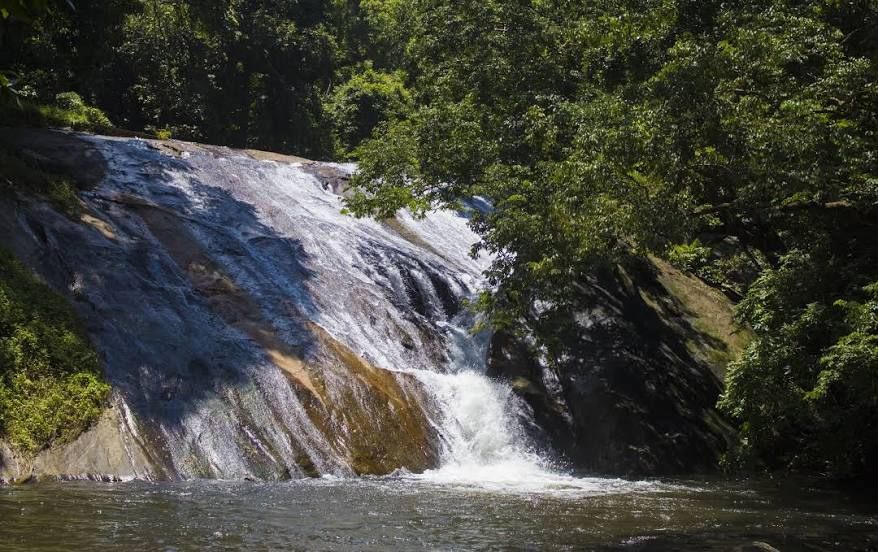

Palakkad fort
Palakkad Fort is an old fort situated in the heart of Palakkad town of Kerala state, southern uIndia. It was recaptured and rebuilt grandly by Sultan Hyder Ali in 1766 A.D and remains one of the best-preserved forts in Kerala.

Malampuzha Dam
Malampuzha Dam is one of the largest dams and reservoirs in Kerala, located near Palakkad, in the state of Kerala in South India, built post independence by the then Madras state.

Dhoni waterfalls
Dhoni is situated around 15 Kilometers from Palakkad town in Kerala, India. Dhoni is named after a boat shaped rock on one of its hill, as boat in Malayalam is called "thoni".
Fantasy Park
Water park with roller coasters & food